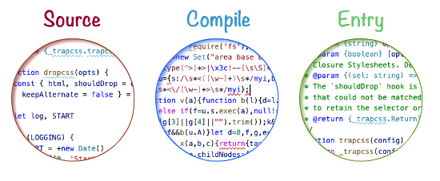

##! Compiling Packages
Let's get down to business. Advanced compilation means that our comments are going to be stripped off the source code, so that all type information is lost. It's possible to preserve all comments, however this is a new feature of the compiler, and will keep ALL comments which might be undesirable. We'll be compiling our API, so the strategy is the following:
- to compile the source code into a file that exports API methods,
- to import those API methods from another file that wraps them in JSDoc.
